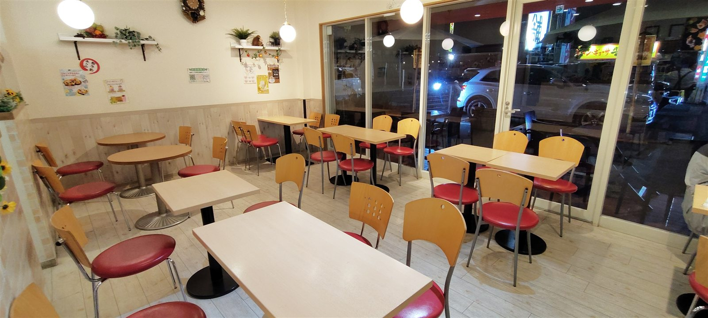
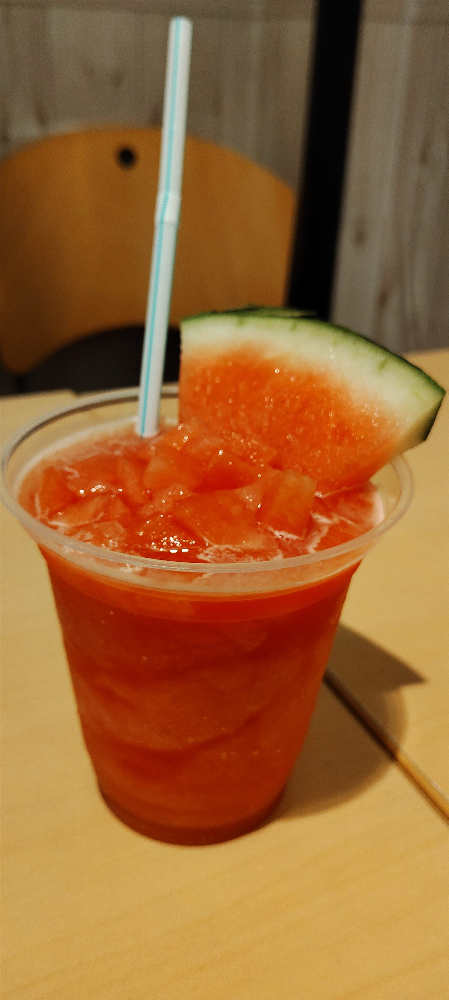
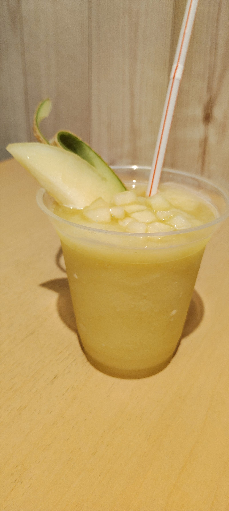
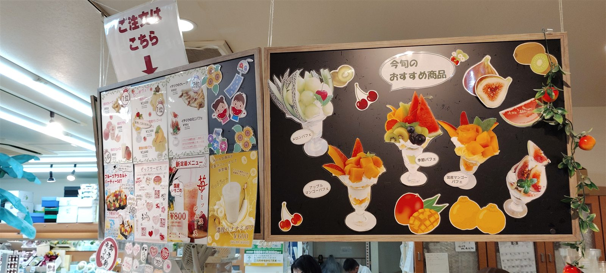
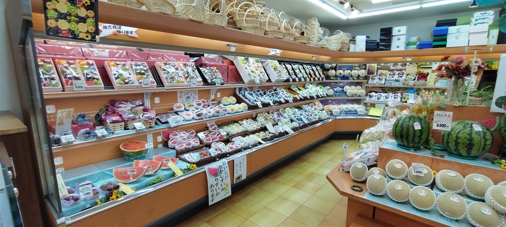
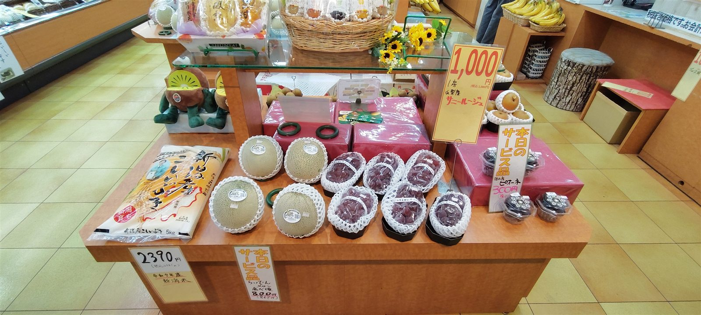
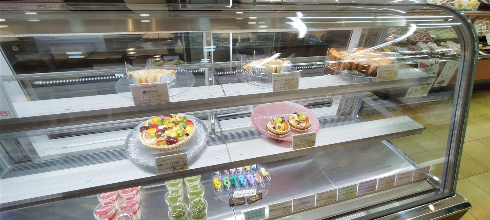
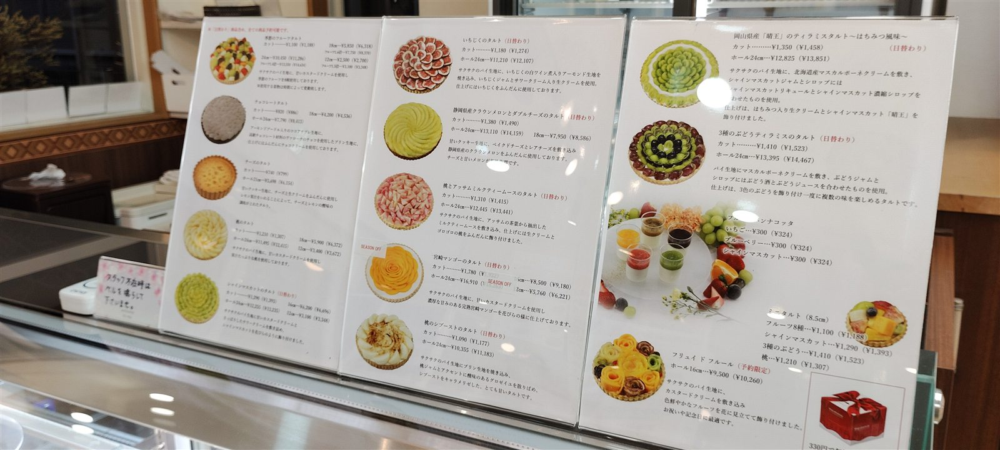

こんにちは、ろぶーです
今回は、くだもの王国 アオイ農園へお邪魔してきました。
こちらは、プレミアムなくだもの屋さんです。そこに併設しているイートイン可能なカフェ「パフェとクレープのお店 ぶどうの木」と、お持ち帰り専門のタルトケーキ屋さん「Lumière du ciel（リュミエール・ド・シエル）」も一緒に楽しんできました。
20時ごろ、閉店間際の訪問ということもあり、店内は空いていました。これはラッキーです。
明るく入りやすい店内
「ぶどうの木」のイートインスペースは、明るくてすっきりした雰囲気。テーブル席が並び、果物を選んだあとに少し休みたいときにも入りやすい空間です。

メロンとスイカの生ジュース
まずは喉が渇いたので、ジュースを選びました。メロンジュースは1,000円、スイカジュースは850円です。
ジュースとしては少し張るお値段ですが、何せプレミアムなくだもののジュースですから……と、勝手にプレミアムと言っていますが（笑）。しっかりカットフルーツも付いていたので、テンションが上がります。



プレミアムな果物売場
続いて店内の果物を見てみると、贈答用にしたくなる品々がずらり。果物がきれいに並び、見ているだけでも楽しくなります。

ちょうどおつとめ品もありましたので、巨峰、プルーン、バナナをお持ち帰りさせていただきました。次回は、その時いちばんおいしい旬のものを選んでみたいと思います。

宝石のようなフルーツタルト
併設しているタルト屋さん「Lumière du ciel」も見逃せません。閉店間際ということもあり、お得な価格でいただける商品がありました。
ケーキの上に宝石がのっているようで、しばらく眺めていたくなります。こちらもお持ち帰りすることにしました。選んだのは、小さめのホールタルトです。

伺うたびに並ぶメニューが違っていて、次は何があるのか楽しみで仕方ありません。

店舗情報
- 店名
- くだもの王国 アオイ農園
- 併設店
- ぶどうの木／Lumière du ciel
- 住所
- 大阪府和泉市葛の葉町3丁目3-11（地図を開く）
- 営業時間
- アオイ農園 9:00〜21:00／ぶどうの木 10:00〜20:00／Lumière du ciel 10:00〜21:00
- 定休日
- なし
- 駐車場
- 10台（公式店舗案内）
- 電話
- アオイ農園・ぶどうの木 0725-41-6955／Lumière du ciel 0725-58-6128
メニュー、価格、営業時間、在庫は変更されることがあります。特に季節の果物やタルトは入荷・販売時期で内容が変わるため、最新情報は公式サイトでご確認ください。
ろぶーのおすすめ
いかがでしょうか。プレミアムなくだものを探しているときは、ぜひ行ってほしいお店です。
その場で生ジュースを楽しみ、贈り物の果物を見て、最後にタルトを選ぶ。くだもの好きなら、店内を一周するだけでも気分が上がります。くだもの王国 アオイ農園は、ろぶーのおすすめのお店です。
公式情報
店舗情報は2026年8月31日時点の公式サイトで確認しました。本文中の価格や感想は訪問時の記録です。写真と動画は2026年8月23日に本人が撮影したものです。